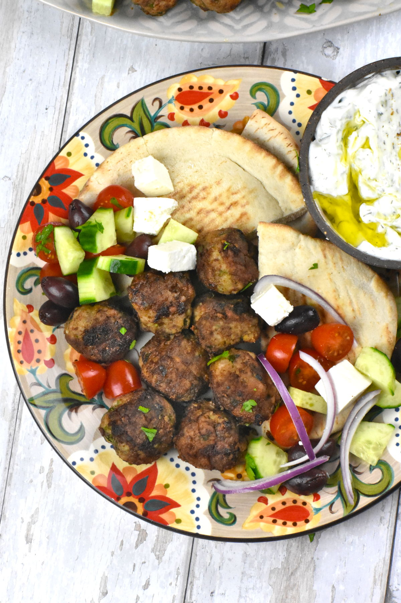

Keftedes (Greek Meatballs)

Description
Keftedes (Greek meatballs) is a famous Greek appetizer, commonly served
as part of a meze platter, with some creamy tzatziki sauce and pita breads,
and as a side to a slice of delicious traditional Greek Moussaka. Keftedes
can also be served as a filling meal with some basmati rice and a nice Greek feta salad.
Ingredients
- 1lb ground beef
- 1lb ground pork (or replace the beef and pork with 2lb ground lamb)
- 1 cup panko
- 2 large eggs
- 2 tbsp milk
- 1/2 small red onion, grated or finely chopped
- 6 garlic cloves, minced
- 1/4 cup fresh mint
- 1/4 cup fresh parsley
- 1 tsp dried oregano
- 1 1/2 tsp salt
- 1/2 tsp pepper
- 1/2 tsp red chili flakes
- 1 tsp cumin
- 1 tsp coriander powder
- 1/2 tsp cinnamon
- 1/4 cup flour
- 1/4 cup olive oil
Steps
-
In a large bowl, combine all ingredients except flour and oil.
You want everything well incorporated, but don’t overwork it.
This can make the meatballs tough.
-
Roll the meatballs into equal sized spheres. As they will go in
pita bread, these aren’t giant meatballs, around 1¼ inches. This
recipe makes around 28-32 meatballs.
-
Spread the flour on a plate, then dredge the meatballs in it so they
get a light dusting.
-
Working in batches if necessary, fry the meatballs in a little olive
oil till brown on all sides.
-
Serve with pita bread, tzatziki, cucumbers, tomatoes and kalamata olives.